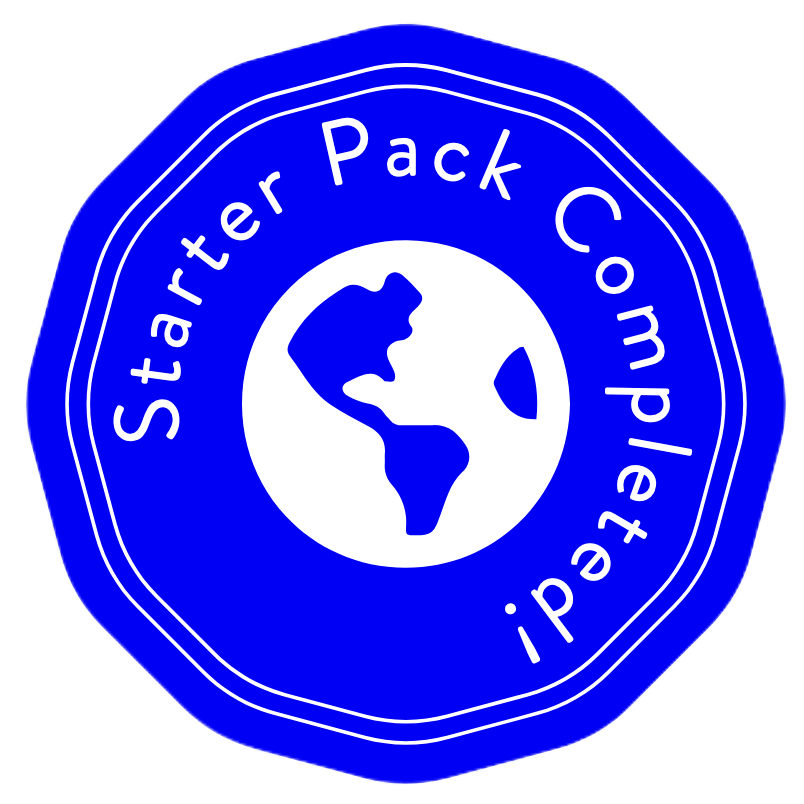

Welcome!
Hi, my name is Matthew Bosio and welcome to my personal portfolio! I am a third year Computer Science student at Cal Poly, San Luis Obispo. I have career interests in building full-stack web applications and video game development. Outside of technology I enjoy playing basketball, running, hiking, and hanging out with friends.